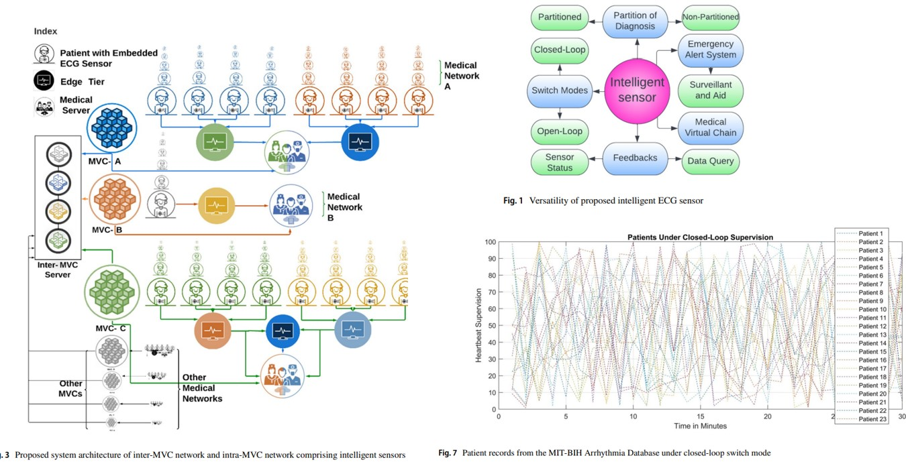

Adarsha Bhattarai
PH.D. Candidate in Computer Engineering | Best Research Awardee by IEEE

About Me
I am a Ph.D. candidate in the Department of Electrical and Computer Engineering at the University of Nebraska-Lincoln. I am the Best Research Awardee by IEEE CCWC and the Best Presenter Awardee by the University of Nebraska. I have a strong background in probability and statistics, signals and systems, cyber security, natural language processing, image processing, machine learning, and computer vision. I have applied this knowledge across various domains, from agriculture to medical applications.
I received my B.S. in Electrical and Electronics Engineering from Istanbul University, where I graduated with honors and ranked 2nd in my class. Before that, I secured 2nd rank overall in Nepal for the Grade 12 science major, a notable achievement featured in a national newspaper.
My current work primarily focuses on medical applications, involving collaborations with cardiologists and radiologists on innovative projects in medical image analysis, particularly in secured remote ECG monitoring and accelerated CEST MRI acquisition.
Contact Me
Email: abhattarai3@huskers.unl.edu
LinkedIn: linkedin.com/in/adarsha-bhattarai
GitHub: github.com/adarsha30735
Education
University of Nebraska – Lincoln, NE, USA (08/2021-present)
PhD in Engineering, Specialization in Computer Engineering
GPA: 3.93/4.0
Earned PH.D. candidacy; Expected graduation in Summer of 2025
Istanbul University, Istanbul, Turkey (08/2017-06/2021)
B.S. in Electrical and Electronics Engineering
GPA: 3.73/4.0 Rank: 2
Selected Research Accomplishments
-

Bhattarai, Adarsha, et al. IEEE Access 10 (2022): 63684-63697.
Read the paper
-

Bhattarai, Adarsha, and Dongming Peng. Springer Nature Computer Science 4.1 (2022): 45.
Read the paper
-

Bhattarai, Adarsha, and Dongming Peng. Springer Nature Computer Science 5.4 (2024): 329.
Read the paper
-

Bhattarai, Adarsha, et al. 2024 IEEE 14th Annual Computing and Communication Workshop and Conference (CCWC).
Read the paper
-

Bhattarai, Adarsha, Yutong Liu, and Dongming Peng. 2024 IEEE World AI IoT Congress (AIIoT).
Read the paper
Notable Project Accomplishments
-

A novel application of LLM technology to ECG diagnosis. The repository includes the detailed implementation and results.
Explore the project
-

A comprehensive system for remote ECG monitoring, showcasing real-time data processing and analysis capabilities.
Explore the project
-

An innovative application focused on integrating IoT devices for enhanced patient monitoring and data analysis.
Explore the project